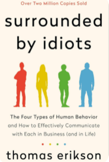
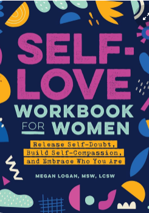

Welcome to BookBeast
"A Site that help you to discover books and it's features"
THRILLER BOOKS
swipe up to read
Thriller
The Silent Witness
by Carolyn Arnold
Review
A gripping page turner! Jane Detective weaves a complex tale of suspense, with unexpected twists at very corner. The Character development is superb and the plot keeps you guessing until the very end.
ReadThriller

Shadows of Deceit
by Samuel Olaoluwa
Review
Samuel Olaoluwa delivers another atmospheric thriller that keeps readers on the edge of their seats. The intricate plot and well-crafted characters make "Shadows of Deceit" a must-read for mystery enthusiasts.
ReadThriller

Surrounded by Idiots
by Thomas Erikson
Review
Surrounded by Idiots is an international phenomenon, selling over 1.5 million copies worldwide. The book delves into the concept of the DISC model, which is a psychological theory that categorizes individuals into these four color-coded personality types.
ReadThriller

Self-Love Workbook for Women
by Megan Logan
Review
This book includes a variety of exercises to engage with your sense of self-love, and the companion journal encourages you to go even deeper with writing and reflection.
Read